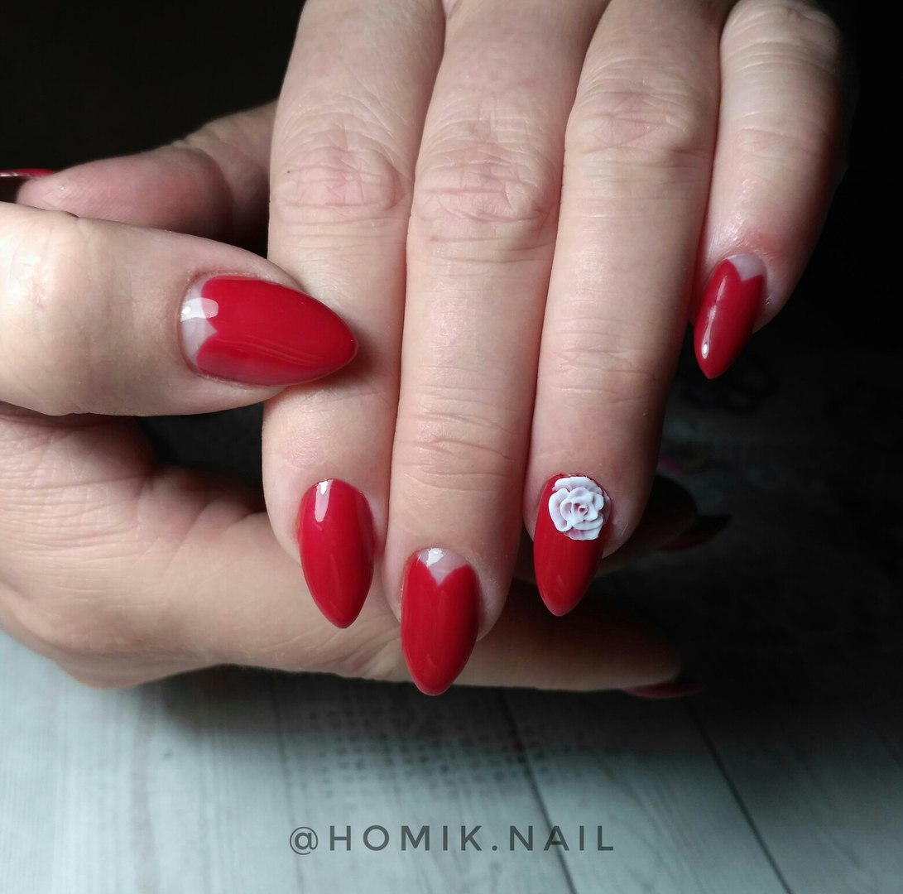

Добро пожаловать в мой мир нейл-арта!
“КРАСОТА СПАСЁТ МИР”
Ф.М. Достоевский, «Идиот».


Вот такую длинну можно отрастить на качественных материалах, цвет мы покрыли в один слой.
➰ ️Cпешу сказать вам о новшестве моих услуг: теперь делаю комбиманикюр. Всё подробности будут в посте выше⬆️⬆️⬆️
💅 В работе используются только качественные материалы.
📌 Технология выполнения:
- ✅ снятие предыдущего покрытия;
- ✅ подпиливание формы ногтей;
- ✅ аппаратный маникюр;
- ✅ выравнивание ногтевой пластины;
- ✅ покрытие гель-лаком;
- ✅ нейл-арт;
- ✅ покрытие топом.
⚜️ Французский маникюр, мраморный дизайн ⚜️
❗ Элементы в маникюре реализованы с помощью ручной росписи.
💅 В работе используются только качественные материалы:
️- ➰ комуфлирующая база от @nailbest_spb
- ➰ белая гель-краска от #tertio.
😱 Многие клиентки «боятся» снятия гель-лака фрезой, предпочитая снятие ацетоносодержащей жидкостью. А давайте разбираться, в чем же разница между двумя способами снятия гель-лака?
✅ СНЯТИЕ ГЕЛЬ-ЛАКА ФРЕЗОЙ
- Самый безопасный вид снятия, т.к. снимаем покрытие до БАЗЫ(!), не касаясь самого ногтя. Время работы — 6-8 минут! Ноготки в целостности и сохранности, клиент доволен, мастер счастлив.
🚫 СНЯТИЕ ГЕЛЬ-ЛАКА ЖИДКОСТЬЮ
- При снятии размачиванием в ацетоносодержащих жидкостях в коже и ногте разрушаются молекулы жира и выводится вода.
- Результат: слоящиеся ногти и сухая трескающаяся кожа и кутикула! Время работы — 25 минут!
- И не факт, что снимется с первого раза... Приходится порой сдирать покрытие или спиливать пилкой, а тут возможны перепилы в области натурального ногтя!